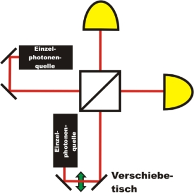

Hong-Ou-Mandel Interference Chapter 2:
Conducting the experiment
In the last chapter, the possibilities at the beam splitter and the indistinguishability were discussed. In this chapter, the quantum phenomenon is tested experimentally. Due to the open jet set-up, we cannot fully (V=100%) produce indistinguishability during the overlap at the beam splitter cube. The effect is still clearly visible (V=66%).
Alteration of the arrival time at the beam splitter
The arrival time of the photons at the beam splitter can be altered by an additional stretch of way in the optical path of a photon. To do so, a translation stage is used where the stretch of way can be altered in steps of up to 0,000.1mm. As photons move at speed of light, it is possible with this set-up to set a time difference in steps of 0,7fs (Femto seconds). With this accuracy the argument of synchrony is fulfilled.

pic. 4: Sketch of the experiment: Alteration of the stretch of way by a translation stage in one of the two paths.
Discovering quantum phenomena yourself:
What is the actual quantum phenomenon at the beam splitter? In the following interactive experiment, you can research it for yourself. In order to do so, the arrival time of the photon is varied with the translation stage. The translation stage is electrically controlled. At the start of the experiment, the stage is driven to 0,09mm in front of the 0-position and is varied from there in steps of 1µm. This minimal difference of path per step cannot be identified on the photos in the interactive experiment.
The measurement shows the coincidences between the two detectors. If there is indeed a coincidence, possibilities a) or b) (from the last chapter) occured. If there is no coincidence, possibilities c) or d) occured. In the interactive experiment, a diagram can be faded in, where the coincidences are shown above the time difference of the two photons. Which behaviour can be observed if they are nearly indistinguishable?
Observation:
If both photons hit the beam splitter at exactly the same time, the coincidence rate drops significantly. The two photons are either transmitted or reflected at the beam splitter (possibility c and d in the last chapter). Ideally, the coincidence rate drops to 0 events per second. Whether the two photons are transmitted or reflected at the beam splitter cannot be predicted. Here, not only Hong-Ou-Mandel interference, but also quantum randomness [Kwo09] is involved.
In our experiment, visibility of the slump is not 100%. This slight visibility can be explained with a sub-perfect symmetric beam splitter (60% to 40%) and a less-than-perfect overlap of the two beams on the beam splitter. In research, the absolute overlap is achieved by a fibre-integrated set-up [Kwo09], which is, however, not convenient for an educational experiment. A considerable slump in the coincidences (dip) is still visible in our experiment (V=66%) and coincides with theory. We would like to work on further improvements of the dip visibility and look forward to receiving your advice and suggestions.
Do all quantum objects show identical behaviour?
Photons, while being absolutely indistinguishable, are either both transmitted or both reflected at the beam splitter. It is an entirely different matter with the behaviour of electrons. As soon as two indistinguishable electrons hit a beam splitter cube, one electron is always transmitted while the other is reflected. Electrons are never both transmitted or both reflected. In the experiment with electrons, as opposed to photons, with indistinguishability the coincidence rate would rise significantly. Electrons belong to the group of fermions, photons belong to the group of bosons. The behaviour in the Hong-Ou-Mandel interferometer therefore depends on the kind of quantum objects - whether they are bosons or fermions.
In the experiment, the two photons are created from one photon pair source. The photons can, however, also originate from different sources [Mos08] and still show the same behaviour with regards to indistinguishability.
The Hong-Ou-Mandel dip is not only a basic experiment, but is also applied in connection with entangled photons in quantum teleportation [Urs04].
Original data from the experiment: Hong-Ou-Mandel dip
Back to overview [klick]
Autor: P. Bronner, Juli 2008
Translation: G. Murphy